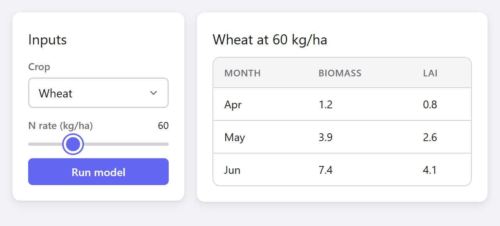
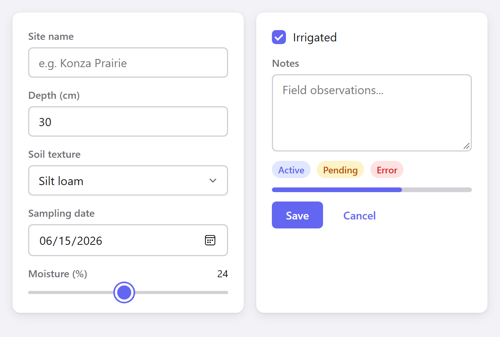
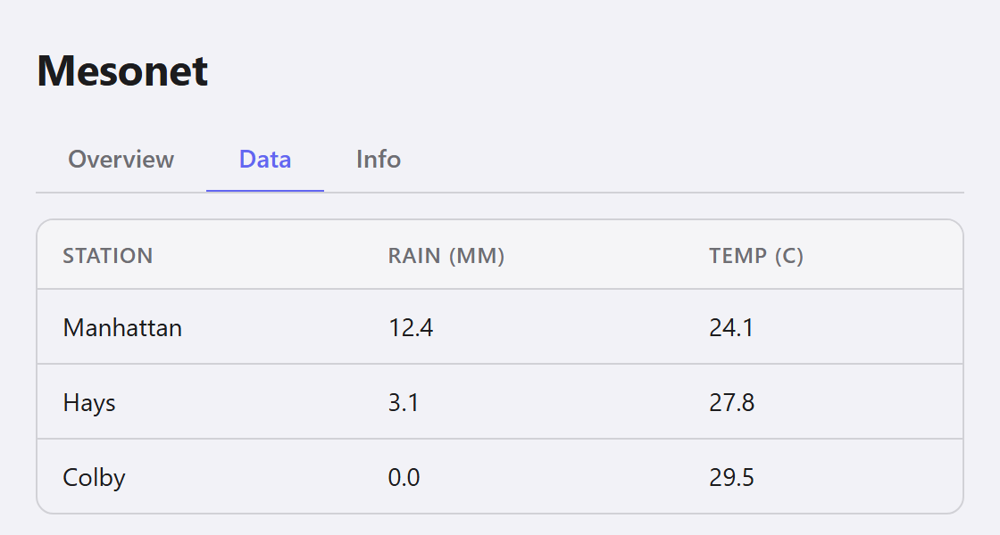
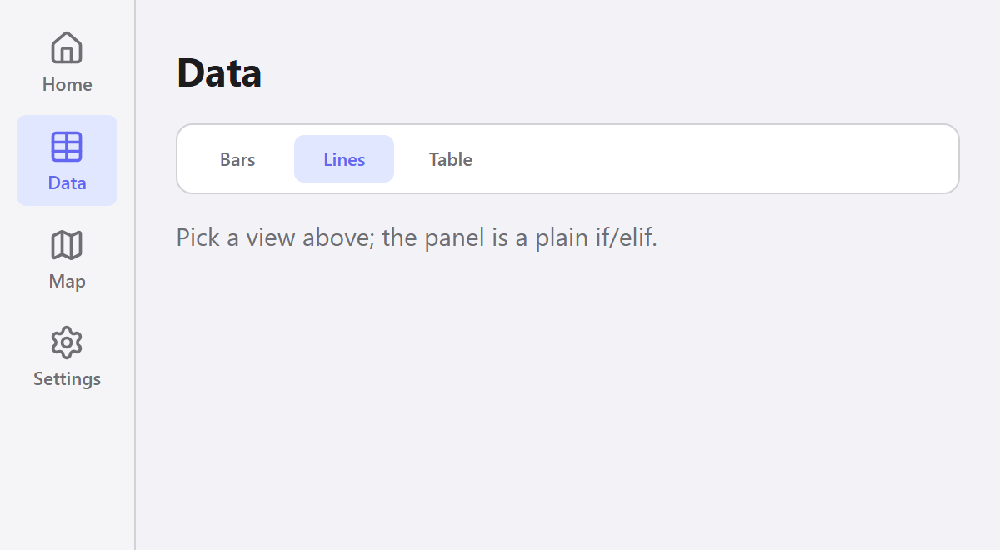
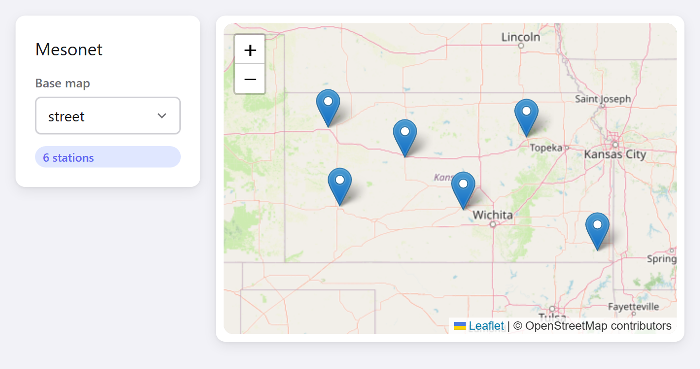
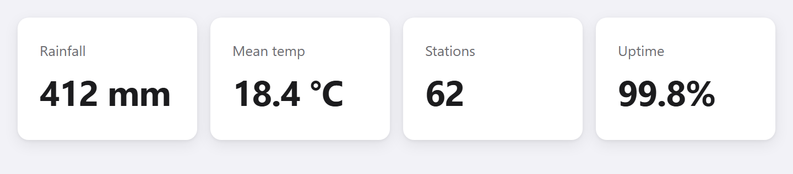
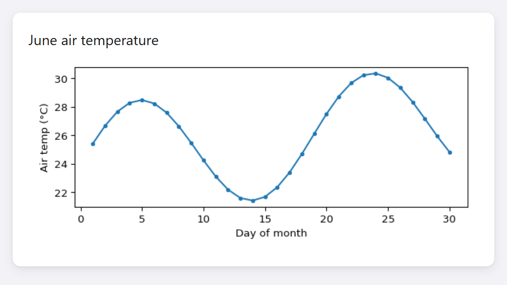

A lightweight framework for the kind of internal dashboards, data explorers, and parameter tools you need at work or at home. An interactive layer on top of the Python you already have: change a state value and the window updates — no full-page refresh, no server.
The right tool for a simple lab or personal project — and deliberately nothing more.
This is the entire app. A plain Python function does the maths;
gui.state holds the input; the slider updates it and the reading recomputes on every change.
The layout is built using with: blocks.
import guile as gui
def to_celsius(f):
return round((f - 32) * 5 / 9, 1)
fahrenheit = gui.state(32.0)
@gui.app("Converter", width=360, height=300, center=True)
def ui():
with gui.card(gap=16):
gui.title("Temperature converter")
gui.slider("°F", value=fahrenheit,
on_change=fahrenheit.set, min=0, max=212)
gui.text(f"{to_celsius(fahrenheit.value)} °C",
size="2xl", bold=True)
gui.run()Each example is a complete app; the picture is that exact code, run by guile.
A fixed-width input card next to a results card that fills the rest. How-to: common layouts →
import guile as gui
crop = gui.state("Wheat")
rate = gui.state(60)
@gui.app("Two columns", width=640, height=330)
def ui():
with gui.row(gap=16, padding=16, align="flex-start"):
with gui.card(gap=12, style="width:220px;flex-shrink:0"):
gui.title("Inputs", size="lg")
gui.select(["Wheat", "Corn", "Soybean"], "Crop",
value=crop, on_change=crop.set)
gui.slider("N rate (kg/ha)", value=rate,
on_change=rate.set, min=0, max=200)
gui.button("Run model")
with gui.card(gap=10, fill=True):
gui.title(f"{crop.value} at {rate.value} kg/ha", size="lg")
gui.table([
{"Month": "Apr", "Biomass": 1.2, "LAI": 0.8},
{"Month": "May", "Biomass": 3.9, "LAI": 2.6},
{"Month": "Jun", "Biomass": 7.4, "LAI": 4.1},
])
gui.run()
Inputs, selects, dates, sliders, badges, progress and buttons. Reference: all widgets →
import guile as gui
@gui.app("Widgets", width=640, height=470)
def ui():
with gui.row(gap=16, padding=16, align="flex-start"):
with gui.card(gap=12, fill=True):
gui.input("Site name", placeholder="e.g. Konza Prairie")
gui.number_input("Depth (cm)", value=30, min=0, step=5)
gui.select(["Silt loam", "Clay", "Sand"], "Soil texture")
gui.date_input("Sampling date", value="2026-06-15")
gui.slider("Moisture (%)", value=24, min=0, max=50)
with gui.card(gap=12, fill=True):
gui.checkbox("Irrigated", value=True)
gui.textarea("Notes", placeholder="Field observations...")
with gui.row(gap=8):
gui.badge("Active")
gui.badge("Pending", variant="warning")
gui.badge("Error", variant="danger")
gui.progress(65)
with gui.row(gap=8):
gui.button("Save")
gui.button("Cancel", variant="ghost")
gui.run()
gui.tabs() returns the active label; the panel is a plain if/elif. How-to: tabs →
import guile as gui
records = [
{"Station": "Manhattan", "Rain (mm)": 12.4, "Temp (C)": 24.1},
{"Station": "Hays", "Rain (mm)": 3.1, "Temp (C)": 27.8},
{"Station": "Colby", "Rain (mm)": 0.0, "Temp (C)": 29.5},
]
@gui.app("Tabs", width=560, height=300)
def ui():
with gui.col(padding=20, gap=14):
gui.title("Mesonet")
tab = gui.tabs(["Overview", "Data", "Info"],
value="Data", key="tabs")
if tab == "Overview":
gui.text("Summary statistics here.")
elif tab == "Data":
gui.table(records)
else:
gui.text("Built with guile.", muted=True)
gui.run()
Icon + label rails for sidebars and toolbars, with ~2100 bundled icons. How-to: button rails →
import guile as gui
@gui.app("Button rail", width=600, height=330)
def ui():
with gui.row(gap=0, align="stretch", style="height:100vh"):
with gui.col(padding=10, style="background:var(--surface-2);"
"border-right:1px solid var(--border)"):
page = gui.rail([
{"label": "Home", "icon": gui.icon("home")},
{"label": "Data", "icon": gui.icon("table")},
{"label": "Map", "icon": gui.icon("map")},
{"label": "Settings", "icon": gui.icon("settings")},
], value="Data", key="nav")
with gui.col(padding=24, gap=14, fill=True):
gui.title(page)
gui.rail(["Bars", "Lines", "Table"], value="Lines",
orientation="horizontal", border=True, key="view")
gui.text("Pick a view above; the panel is a plain if/elif.",
muted=True)
gui.run()
Interactive Leaflet maps on OpenStreetMap, with markers, overlays and drawing. How-to: maps →
import guile as gui
STATIONS = [("Manhattan", 39.21, -96.59), ("Hays", 38.85, -99.34),
("Colby", 39.39, -101.07), ("Garden City", 38.00, -100.82),
("Hutchinson", 37.93, -98.02), ("Cherokee", 37.20, -94.98)]
picked = gui.state("Click a station")
@gui.app("Map", width=720, height=380)
def ui():
with gui.row(gap=16, padding=16, align="flex-start"):
with gui.card(gap=12, style="width:190px;flex-shrink:0"):
gui.title("Mesonet", size="lg")
gui.badge(f"{len(STATIONS)} stations")
gui.text(picked.value, muted=True, size="sm")
with gui.card(padding=8, fill=True):
gui.leaflet(center=(38.5, -98.3), zoom=6, height=320, key="map",
markers=[gui.Marker((lat, lon), tooltip=name,
on_click=lambda n=name: picked.set(n))
for name, lat, lon in STATIONS])
gui.run()
Equal-width cards from a plain for loop: give each one fill=True. How-to: common layouts →
import guile as gui
METRICS = [("Rainfall", "412 mm"), ("Mean temp", "18.4 °C"),
("Stations", "62"), ("Uptime", "99.8%")]
@gui.app("Dashboard", width=720, height=200)
def ui():
with gui.row(gap=12, padding=16):
for label, value in METRICS:
with gui.card(fill=True, gap=4):
gui.text(label, muted=True, size="sm")
gui.text(value, size="2xl", bold=True)
gui.run()
Any matplotlib figure, rendered in place with gui.figure(). Reference: gui.figure() →
import math
import guile as gui
import matplotlib.pyplot as plt
days = list(range(1, 31))
temps = [24 + 4 * math.sin(d / 3) + d * 0.1 for d in days]
def make_plot():
fig, ax = plt.subplots(figsize=(6, 2.6))
ax.plot(days, temps, marker="o", markersize=3)
ax.set_xlabel("Day of month")
ax.set_ylabel("Air temp (°C)")
fig.tight_layout()
return fig
@gui.app("Figure", width=640, height=360)
def ui():
with gui.card(gap=8, style="margin:16px"):
gui.title("June air temperature", size="lg")
gui.figure(make_plot())
gui.run()